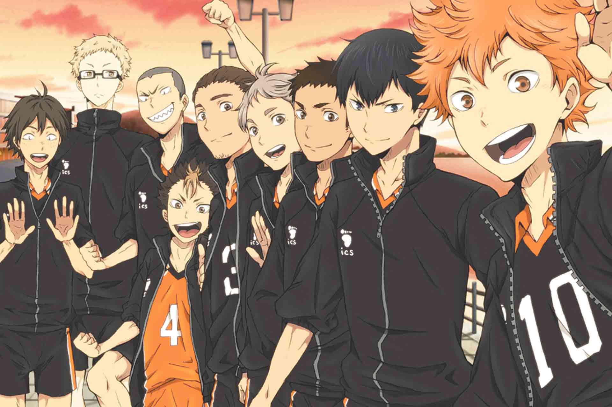

排球少年！！烏野高中角色列表
日本漫畫家古館春一所著漫畫《排球少年！！》的烏野高中角色列表
日向翔陽
烏野「最強的誘餌」
本作的主人公，性格明朗單純的努力家，和宛如對手一般存在的影山經常互相競爭。
超群的身體能力彌補了基礎技術和身高上的不足。
目標是成為烏野高中的王牌。以看著那小小的身軀無法想像的優異跳躍力為賣點，
在比賽中不斷用快攻迅速得分，使對手把注意力集中放在日向身上，
讓其他主攻手在對手缺乏防備時活躍起來，因而被稱之為「最強的誘餌」。
影山飛雄
烏野「球場上的王者」
本作另一位主人公。銳利的紺青色眼睛和一頭俐落的黑色短髮為其特徵。
擁有極佳球感和技術的天才舉球員，被稱為「球場上的王者」。不善與人溝通，
常給人一種渾身帶刺的第一印象，但其實是個率真的人。
擁有超群的球感、控球能力、敏銳的判斷力和出色的身體能力，能夠傳出精準度極高的托球，
在準度方面本作中無人能出其右。即使是天才，也不吝惜努力，
經常從他校的舉球員身上學習值得效法的技術。
澤村大地
烏野「不動的頂樑柱」
烏野高中男子排球部的主將，一頭黑色短髮，性格溫和又可靠，支持著部員們又供他們依靠的主將。
比起攻擊更擅長守備，對接球的技術很有自信，有著非比尋常的防守力。
有如「地基」一般穩定支持烏野發揮實力。
條善寺的照島曾說，比起日向和影山，他的接球能力才是烏野能夠不斷獲勝的頂樑柱。
菅原孝支
烏野「不屈的舉球員」
烏野高中男子排球部的副主將。
有著一頭灰色的中分瀏海短髮，以粗眉和左眼下的淚痣為特色的爽朗青年。
和影山打相同的位置，在影山加入前一直都是烏野的正選舉球員。
身為舉球員的技術和才能並不特別出色，但時常注意周遭情況、觀察隊友們的狀況，
並且調和隊伍的氣氛，身為球隊「司令塔」的能力頂尖。擅於鼓舞隊友，讓隊友找回平常心。
在比賽中會一邊鼓勵攻擊手，一邊觀察攻擊手的表情或身心狀況，做出適當舉球。
田中龍之介
烏野「火爆的攻擊手」
有一個和尚頭，經常仰著首朝著對方囂張地說話。
力量在球隊中僅次於東峰，是烏野第二強的主攻手，有著被逼到絕境時也絲毫不影響表現的強韌抗壓性。
外表粗爆但扣球卻意外的角度非常刁鑽，在打球方面是個心思細膩的人。
在與稻荷崎一戰中一度因為自己的無所作為而消沈，在排球社中沒有一項能力是第一的他認為自己很平凡，
但隨後又振作起來，因為「平凡的自己沒時間消沈」。
東峰旭
烏野「玻璃心的王牌」
烏野高校男子排球部的王牌。留有小鬍子、將長髮在腦後纏成包包頭是其特徵。
以充滿力量感的扣球為武器，是烏野少數的長參選手。
從中學時就因扣球的強勁力道而為人所知。
在第一次的東京合宿完結後為了擁有「能在決定勝負的時候穩定發揮的實力」，練習了跳發球，
日後成為了和影山一樣，具威脅性的強發選手。
西谷 夕
烏野「烏野的守護神」
被澤村稱為「烏野的守護神」，擁有堅強實力。
平時總是將一頭黑色短髮向上梳，額頭中間有一撮金髮自然垂下，往上梳的頭髮會為西谷的身高增加十公分。
澤村曾言，只要有他站在賽場上，就會安心好幾倍。
擁有優異的反射神經、動態視力和動物般的直覺，基本上就是個靠本能行動的人。
即使是強烈的扣球、發球也能完美接起，和影山一樣是天才型選手，
所以教人時會混入很多自己感覺型的形容詞，也就是教得很爛。
在第一次的東京合宿完結後加強練習了托球。
面對不常出現的左撇子選手——牛島,發誓給自己三球的時間適應，自己一定接下牛若的球，並且成功。
月島 螢
烏野「機智的攔截手」
金色短髮，戴著黑色粗框眼鏡，與山口忠由小三開始認識。
覺得排球不過就是個社團活動而已，不需要太認真，因為太過認真的後果之後也只會更受挫而已。
是排球隊中現任隊員中身高第一的球員。經常拿日向的身高來戲弄他。
接球很弱，本人曾表示討厭接球。非常善於使用假動作。
山口 忠
烏野「關鍵球的專家」
烏野排球隊中唯一一個不是先發成員的一年級，在36話中為了改變現狀，開始跟嶋田誠學習跳躍飄球。
在IH對青葉城西之戰時，曾與日向做更換，作為關鍵發球員上場，但並沒有得分，
為此在心理上造成缺失及悔悟，想要將勤補拙，在之後不斷鑽研發球，希望自己能為球隊出力。
在春高對和谷久南之戰時亦再次作為關鍵發球員上場，與月島做更換，並擦網入界得分，
使烏野到了局點。之後和青城對戰的第二局作為關鍵發球員上場，拿下五分。